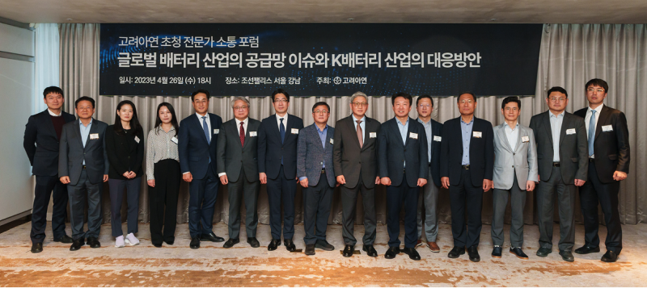

고려아연, K-배터리 산업의 미래 모색하는 ‘전문가 소통 포럼’ 개최
- 전문가들 “美 IRA·EU CRMA 등 글로벌 배터리 산업 변화 대응 위해 정부·산업계 긴밀히 협력해야”
- 中이 놓친 ‘친환경 니켈 제련’, K-배터리 경쟁력으로 급부상… “‘탄소감축’ 기조 맞춰 성장 전망”
- 고려아연 “세계 1위 비철금속 제련 노하우로 2차 배터리 소재 밸류체인 강화할 것”
고려아연이 지난 26일 K-배터리 산업의 현황과 미래 대응 방안 모색을 위한 ‘전문가 소통 포럼’을 개최했다. 이번 포럼은 배터리 산업이 차세대 먹거리로 부상하는 가운데 이를 둘러싼 잠재 이슈를 파악하고, 국내 2차 배터리 및 소재산업 육성에 필요한 정책적 대응을 모색하기 위해 마련됐다.
고려아연 지속가능경영위원회 정무경 위원장 주관으로 개최된 이번 전문가 소통 포럼에는 김성환 더불어민주당 국회의원국회 산업통상자원중소벤처기업위원회 소속, 이용필 산업통상자원부 첨단산업정책관, 산업연구원 등 국회, 정부 및 유관기관, 학계, 언론계 등 관련 분야 전문가들이 참석했다.
전문가들은 이날 K-배터리 산업계가 직면한 현황을 다층적으로 진단하고, 배터리 산업 증진을 위한 업계의 실질적 니즈를 청취하는 한편, 정부의 세제 혜택 및 보조금 등 보다 실효성 있는 산업 지원책에 대해 논의했다.
‘글로벌 배터리 산업 공급망 이슈와 K-배터리 산업 대응 방안’으로 주제 발표를 맡은 장사범 고려아연 신소재사업본부 부사장은 미국 IRA(인플레이션 감축법)와 유럽 CRMA(핵심원자재법)에 대응해 우리나라도 배터리 소재 분야의 대중(對中) 의존도를 낮추고 기업 경쟁력을 강화해야 한다고 주문했다.
장 부사장은 “대중 의존도를 낮추고 글로벌 공급망을 다변화하는 전략을 쓰는 미국과 유럽에 비해 우리나라는 여전히 전구체를 비롯해 배터리 소재의 90% 이상을 중국에 의존하는 실정”이라면서 “양극재와 전구체 생산 이전 단계인 니켈 제련에서부터 국내 기업의 경쟁력을 강화할 필요가 있다”고 피력했다.
현재 고려아연은 탄소배출이 적은 친환경 니켈 제련 기술을 개발한 상태로, 2026년까지 4만 톤의 고순도 니켈을 국내 생산해 배터리 소재 밸류체인을 강화하겠다는 구상이다. 장 부사장은 “고려아연은 고도의 제련 기술을 바탕으로 니켈 제련은 물론, 배터리 리사이클링, 전구체 및 동박 제조까지 배터리 소재 대부분을 공급할 수 있는 밸류체인을 구축한 상태”라면서 “니켈부터 전구체, 양극재로 이어지는 K-배터리 생태계의 건전성을 강화하는 데 기여하겠다”고 밝혔다.
‘국내 2차 배터리 산업 증진을 위한 방안’을 주제로 발표에 나선 최장욱 서울대 화학생물공학부 교수도 글로벌 광물 확보 동맹 결성 등 공급망 강화와 더불어 탄탄한 밸류체인을 기반으로 한 친환경 광물 제련 기술을 강조했다. 특히, 고려아연이 주도하는 친환경 니켈 제련 기술은 중국에 대한 비교 우위를 점하고 탄소 감축을 강조하는 글로벌 정책 방향에 부합한다는 점에서 주목할 만하다고 평가했다.
최 교수는 “그동안 중국이 압도적으로 제련을 많이 할 수 있었던 것은 자국 내에 환경 규제가 없었던 덕분이었을 텐데 미국이 IRA로 그 점을 공략했다”면서 “탄소감축이 전 세계적 화두가 된 상황에서 누가 친환경 제련을 주도하는지가 관건이 될 것이다. 이 때 제련부터 전구체, 배터리 소재에 이르는 유기적인 공정을 강화하는 게 핵심”이라고 강조했다.이후 진행된 토론에서도 K-배터리 산업 증진 방안을 놓고 다양한 의견이 제기됐다. 전문가들은 특히 정부와 산업계가 긴밀하게 협력해야 글로벌 배터리 소재 시장의 변화에 선제적으로 대응할 수 있다고 입을 모았다.
선양국 한양대 에너지공학과 교수는 “2차 배터리를 만들어서 전기차에 심는 것만이 중요한 게 아니라, 그 앞 단계인 광물 제련에서부터 배터리 소재 원료를 잘 확보해야 미국 IRA에 대응해 경쟁력을 가질 수 있다”면서 “최근 정부가 K-배터리 공급망을 점검하고 각 기업들도 광산 사업에 나서는 것처럼 정부와 산업계가 꾸준히 협력한다면 글로벌 배터리 소재 시장에서 유리한 위치를 찾을 수 있을 것”이라고 제언했다.
조은교 산업연구원 부연구위원도 “중국은 차세대 배터리 시장에서도 주도권을 갖기 위해 정부 차원에서 배터리 기업들을 적극적으로 육성하고 산·관·학 연계 시스템을 강화하고 있다”면서 “우리나라도 기업과 정부 간 연계와 협력이 잘 이뤄져 차세대 배터리 기술 산업화에 유리한 환경이 조성되길 기대한다”고 밝혔다.
정부의 세제 혜택이나 보조금 지원이 필요하다는 주장도 나왔다. 김필수 대림대 자동차학과 교수는 “정부가 최근 미래차를 포함해 국가전략기술 분야에 투자하는 대기업들에게 세액공제를 하겠다고 발표했지만 막상 법안을 들여다보면 실질적인 혜택은 미흡하다. 국내에 전기차 생산시설을 지어도 세액공제가 최대 3%에 불과한 수준”이라면서 “정부와 국회가 나서서 기업들이 사업을 펼치고 싶어할 환경을 만들어야 2차 배터리 소재 산업도 성장할 수 있다”고 지적했다.
한편, 2차 배터리 소재 사업은 신재생에너지 및 수소, 자원순환과 함께 고려아연의 신(新)성장동력 ‘트로이카 드라이브’를 구성하는 한 축으로, 최근 고려아연이 사업 확장에 가장 속도를 내고 있는 분야다. 특히 2차 배터리 소재인 니켈 제련이나 전구체 생산은 광물에서의 원료 추출이 핵심인 만큼, 비철금속 제련 분야에서 세계적인 경쟁력을 갖춘 고려아연이 강점을 가진 영역이다.
현재 고려아연은 2017년 설립된 자회사 켐코를 통해 2차 배터리 핵심 소재인 황산니켈을 연간 8만톤 규모로 생산하고 있으며, 올해말부터는 2020년 설립된 자회사 케이잼을 통해 연간 1만3천톤의 전해동박 생산에 나선다. 지난해에는 켐코와 LG화학 간 합작법인 한국전구체주식회사를 설립, 내년부터 연간 2만톤 규모의 전구체를 생산할 계획이다.

[사진자료] 26일 고려아연이 주최한 ‘K-배터리 현황 및 산업 증진 방안 모색을 위한 전문가 소통 포럼’에 각계 전문가들이 참석했다.